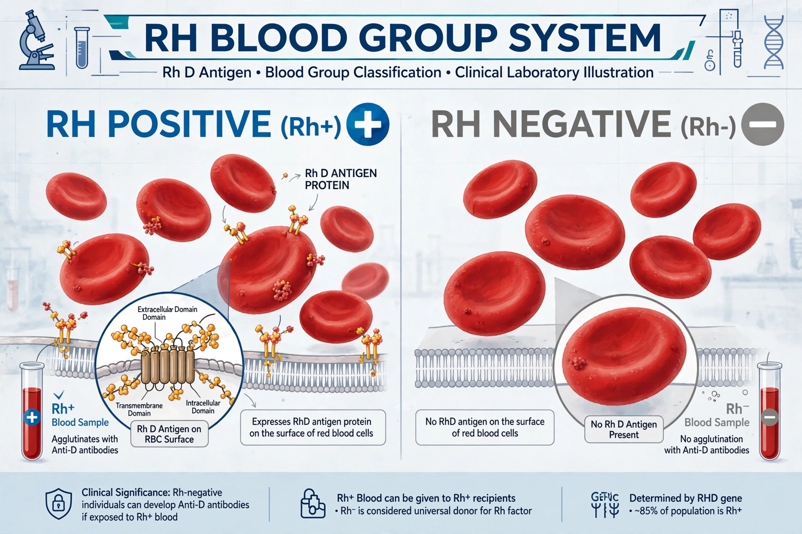

The Rh blood group system is a human blood group system. It contains proteins on the surface of red blood cells. After the ABO blood group system, it is the most likely to be involved in transfusion reactions. The Rh blood group system consists of 49 defined blood group antigens, among which the five antigens D, C, c, E, and e are the most important.

The commonly used terms Rh factor, Rh positive and Rh negative refer to the D antigen only. An individual either has, or does not have, the Rh factor on the surface of their red blood cells. This is indicated in a person's blood type by the + or − suffix, such as A+ or B−.
The system is named after the rhesus macaque, in experiments with whose blood Karl Landsteiner and Alexander Wiener identified the factor in 1940, building on work by Landsteiner and Philip Levine on haemolytic disease of the newborn.
Rh incompatibility between an Rh-negative mother and an Rh-positive fetus can cause haemolytic disease of the newborn, in which maternal antibodies cross the placenta and attack fetal red blood cells. It is preventable by administering anti-D immunoglobulin (such as Rho(D) immune globulin) during pregnancy and after delivery. Rh typing is also essential for safe blood transfusion.
The antigens are encoded mainly by two closely linked genes, RHD and RHCE, on chromosome 1. Most Rh-negative individuals of European ancestry lack the RHD gene entirely.